TO DO
- test to test a push
- Explain the choice of absorbance thresholds used in the QC step (Section 4.1)
- Double-check the µg CO2-C conversion formula (Section 5.3) against the MicroResp manual — currently taken from an Excel document
- Check where the MBC and qCO2 formulas (Section 7.1) come from, and confirm their units
- Section 6’s standard-soil QC plot only shows one run currently — revisit once more run data is available
- Turn Section 11’s per-variable plotting into a loop over each index (basal_resp through shannon)
- Investigate and resolve the one dropped data point warning in
rSIRs(Section 7.2) — likely a negative-or-zero value going intolog() - change ylim() in normalized / not normalized plot to reflect new data (5 plates added) so no points are out of range
1 - Introduction
This vignette walks through the full analysis pipeline for a MicroResp experiment, from raw plate import to substrate-level CO2 respiration values. It follows the same overall logic as the main N-dosage pipeline (import-tidy, blank-correction, abs-to-conc), but MicroResp experiments differ enough — more data layers per plate, no standard curve, and a different final unit (a respiration rate rather than a concentration) — that they’re covered here as their own self-contained walkthrough rather than split across the main vignettes.
We start, as in import-tidy, with importing and tidying data recorded with more than 2 layers per plate (see the tip on multiple data layers there) — then move on to the MicroResp-specific steps: joining sample metadata, quality-checking and cleaning raw absorbance, normalizing across plates, converting to %CO2 and then to a respiration rate, and finally checking for and removing per-sample outliers.
Here, we quickly go through the import pipeline with an example of data from a MicroResp experiment. To understand what this means: here plates are incubated for 5h. An absorbance reading is done at t = 0h (t0) and t = 5h (t5). There is also mapping data, containing the info on which substrate has been added in which well. Substrates are, in this experiment: glucose (Glu), water (H2O), oxalic acid (OA), lignin (Lgn), N-acetylglucosamine (NAG), gamma-acetylbutyric acid (gABA), alanine (Ala) and urea (Urea).
So, the 3 layers of data are referred to as abs_t0, abs_t5, and map.
Overview
This vignette runs through 12 sections in a single, mostly linear pipeline. Here’s the shape of it, grouped into the main phases:
flowchart TD
A[Import, tidy & join metadata]:::contribution --> C[Clean data, normalize & convert to CO2 rate]:::caseStudy
C --> D[Average per plate & substrate]:::loopTarget
D --> O{{QC / outlier removal}}:::contribution
O --> D
D --> F1[Correct for basal respiration]:::caseStudy
F1 --> H[QC standard soils]:::caseStudy
F1 --> F2[Compute indices: MBC, qCO2, MSIR, Shannon + Final wrangling & export]:::caseStudy
classDef contribution fill:#dbeafe,stroke:#2563eb,color:#1e3a8a,stroke-width:1.5px,font-weight:bold;
classDef caseStudy fill:#f8fafc,stroke:#cbd5e1,color:#64748b,stroke-width:1px;
classDef loopTarget fill:#f8fafc,stroke:#2563eb,color:#334155,stroke-width:1.5px,stroke-dasharray:4 2,font-weight:bold;
click A "#sec-import-tidy-metadata" "Section 2"
click C "#sec-clean-normalize-convert" "Section 3"
click D "#sec-average-outlier-removal" "Section 4"
click O "#sec-average-outlier-removal" "Section 4"
click F1 "#sec-basal-respiration" "Section 5"
click H "#sec-qc-std-soils" "Section 6"
click F2 "#sec-compute-indices" "Section 7"
Bold boxes use plate2N functions directly; the remaining boxes apply the tidyverse toolbox (Wickham et al. 2019) to MicroResp data.
- Sections 2: import raw plate files, tidy them, and join in sample metadata.
- Section 3: quality-check raw absorbance, remove empty/edge wells, normalize across plates, then convert to %CO2 and a respiration rate.
- Section 4: compute a preliminary average, then iteratively check for and remove per-plate1/substrate outliers, and recompute the final average.
- Section 5: correct for basal respiration.
- Section 6: a QC check on the standard soils.
- Section 7: compute the summary indices (MBC, qCO2, MSIR, Shannon).
- Section 8: final study-specific wrangling and export.
2 - Import & tidy 2+ layers, then join metadata
2.1 - Importing 2 layers of absorbance data
# Get path to absorbance data, t0 and t5
MR_t0_csv <- system.file("extdata", "MR_abs_t0.csv", package = "plate2N")
MR_t5_csv <- system.file("extdata", "MR_abs_t5.csv", package = "plate2N")
# import from csv file type
MR_abs_t0 <- csv_to_tibble(MR_t0_csv)
MR_abs_t5 <- csv_to_tibble(MR_t5_csv)
# Check them out
MR_abs_t0; MR_abs_t5
#> # A tibble: 90 × 13
#> row X1 X2 X3 X4 X5 X6 X7 X8 X9 X10 X11 X12
#> <chr> <dbl> <dbl> <dbl> <dbl> <dbl> <dbl> <dbl> <dbl> <dbl> <dbl> <dbl> <dbl>
#> 1 P01 1 2 3 4 5 6 7 8 9 10 11 12
#> 2 A 0.93 1.15 1.14 1.14 1.15 1.16 1.16 1.17 1.17 1.12 1.14 1.17
#> 3 B 1.15 1.16 1.13 1.16 1.16 1.16 1.17 1.16 1.14 1.16 1.16 1.15
#> 4 C 1.16 1.15 1.14 1.17 1.15 1.16 1.19 1.19 1.17 1.17 1.18 1.17
#> 5 D 1.17 1.16 1.16 1.16 1.16 1.16 1.18 1.17 1.14 1.18 1.17 1.17
#> 6 E 1.19 1.16 1.16 1.18 1.17 1.15 1.19 1.1 1.11 1.17 1.16 1.16
#> 7 F 1.16 1.17 1.17 1.18 1.19 1.15 1.19 1.13 1.13 1.16 1.14 1.18
#> 8 G 1.17 1.15 1.16 1.13 1.19 1.16 1.2 1.08 1.15 1.16 1.15 1.16
#> 9 H 1.17 1.16 1.17 1.16 1.19 1.16 1.2 1.11 1.15 1.15 1.16 1.18
#> 10 P02 1 2 3 4 5 6 7 8 9 10 11 12
#> # ℹ 80 more rows
#> # A tibble: 90 × 13
#> row X1 X2 X3 X4 X5 X6 X7 X8 X9 X10 X11 X12
#> <chr> <dbl> <dbl> <dbl> <dbl> <dbl> <dbl> <dbl> <dbl> <dbl> <dbl> <dbl> <dbl>
#> 1 P01 1 2 3 4 5 6 7 8 9 10 11 12
#> 2 A 0.67 0.39 0.89 0.91 0.32 0.6 0.77 0.81 0.86 0.67 0.79 0.98
#> 3 B 0.9 0.4 0.86 0.92 0.32 0.64 0.81 0.79 0.83 0.77 0.82 0.94
#> 4 C 0.92 0.42 0.89 0.93 0.33 0.56 0.81 0.8 0.86 0.78 0.84 0.95
#> 5 D 0.92 0.39 0.91 0.91 0.32 0.6 0.81 0.79 0.84 0.81 0.84 0.95
#> 6 E 0.94 0.41 0.9 0.95 0.34 0.59 0.8 0.7 0.8 0.79 0.81 0.95
#> 7 F 0.92 0.41 0.92 0.94 0.36 0.6 0.82 0.77 0.79 0.78 0.8 0.96
#> 8 G 0.93 0.41 0.92 0.89 0.36 0.65 0.83 0.72 0.84 0.76 0.8 0.94
#> 9 H 0.93 0.43 0.92 0.94 0.34 0.62 0.83 0.72 0.83 0.74 0.8 0.96
#> 10 P02 1 2 3 4 5 6 7 8 9 10 11 12
#> # ℹ 80 more rowsMore layers of data are possible
In theory, any number of data layers are possible - you just need to extend the logic displayed here, with additional elements to some arguments that are vectors (e.g.,
abs_map = c("abs_t0", "abs_t5", "map")) and others that are lists of all data sets (one per layer).
2.2 - Being creative with importing mappings
In a classical MicroResp experiment, a whole 96-well plate is dedicated to a single sample, though this may vary between experimental design. In this particular case, the mapping did not relate to samples, but to substrates added. And because the template of substrate addition was strictly the same for each plate, with a complete column attributed per substrate, there is a much simpler way to import the mapping data than creating a plate layout csv and importing it. This holds particularly true for an experiment with a large number of plates (we had hundreds). So feel free to be creative in generating layers of data, as best fits your needs.
Plate mapping is strictly the same for each plate throughout the experiment, so we propose to take advantage of the function plate2N::map_plates() (see also the prepare-plates vignette) to create this mapping data in R.
First, create a vector with the names of the substrates (in the order of the plate map)
# vector of substrates
MR_columns <- c(
"Std_Glu", "Std_H2O",
"H2O", "OA", "Glu", "Lgn", "NAG", "gABA", "Ala", "Urea")Then, compute the number of plates required (here, 5 plates) by counting how many cells in the first column of MR_abs_t0 do not correspond to one of the 26 LETTERS (= number of plate ids).
Finally, run the mapping function with
plate_id that pastes “P” with numbers from 01 to the nb of plates
“sample list” = repetition of the vector of substrates x the nb of plates
no std curves or blank (not needed in MicroResp experiments), and 2 empty columns (1 and 12, typically disregarded in those experiments due to large edge effects)
8 wells per “sample” (in this case: not samples but substrates)
# extract the real plate ids present in the raw data, in order
(plate_ids_used <- MR_abs_t0 |>
dplyr::filter(!(row %in% LETTERS)) |>
dplyr::pull(row))
#> [1] "P01" "P02" "P03" "P04" "P05" "P11" "P12" "P13" "P14" "P15"
# compute the mapping
MR_map <- map_plates(
plate_ids = plate_ids_used,
samples = rep(MR_columns, nb_plates),
n_samples_per_plate = 10,
column_curves = c(), column_blank = c(), column_empty = c(1,12),
n_wells_samples = 8)
# Check it out
MR_map
#> # A tibble: 90 × 13
#> row X1 X2 X3 X4 X5 X6 X7 X8 X9 X10 X11 X12
#> <chr> <chr> <chr> <chr> <chr> <chr> <chr> <chr> <chr> <chr> <chr> <chr> <chr>
#> 1 P01 1 2 3 4 5 6 7 8 9 10 11 12
#> 2 A empty Std_… Std_… H2O OA Glu Lgn NAG gABA Ala Urea empty
#> 3 B empty Std_… Std_… H2O OA Glu Lgn NAG gABA Ala Urea empty
#> 4 C empty Std_… Std_… H2O OA Glu Lgn NAG gABA Ala Urea empty
#> 5 D empty Std_… Std_… H2O OA Glu Lgn NAG gABA Ala Urea empty
#> 6 E empty Std_… Std_… H2O OA Glu Lgn NAG gABA Ala Urea empty
#> 7 F empty Std_… Std_… H2O OA Glu Lgn NAG gABA Ala Urea empty
#> 8 G empty Std_… Std_… H2O OA Glu Lgn NAG gABA Ala Urea empty
#> 9 H empty Std_… Std_… H2O OA Glu Lgn NAG gABA Ala Urea empty
#> 10 P02 1 2 3 4 5 6 7 8 9 10 11 12
#> # ℹ 80 more rowsSuch creative methods are particularly time-saving with large datasets. Here, we have only 5 plates <=> 45 rows in our tibble. But in a 100-plate dataset, this would correspond to 900 rows, quite time-consuming to encode by hand.
2.3 - Verticalize and join all 3 layers
Notice the use of a 3-element (rather than 2-element) list and a 3-element vector for the arguments tibble_list and abs_map, respectively. The logic stays the same as with 2 layers though.
# verticalize and join the 3 layers
MR_joined <- join_abs_map(
tibble_list = list( MR_abs_t0, MR_abs_t5, MR_map),
abs_map = c("abs_t0-", "abs_t5-", "map-"),
coerce_numeric = FALSE,
dataset = "MR-" )
# Check it out
MR_joined
#> # A tibble: 96 × 32
#> row column `MR-abs_t0-P01` `MR-abs_t0-P02` `MR-abs_t0-P03` `MR-abs_t0-P04`
#> <chr> <chr> <chr> <chr> <chr> <chr>
#> 1 A 1 0.93 1.23 1.27 1.32
#> 2 A 2 1.15 1.23 1.26 1.25
#> 3 A 3 1.14 1.22 1.25 1.22
#> 4 A 4 1.14 1.22 1.26 1.3
#> 5 A 5 1.15 1.22 1.24 1.28
#> 6 A 6 1.16 1.21 1.23 1.26
#> 7 A 7 1.16 1.23 1.23 1.27
#> 8 A 8 1.17 1.2 1.24 1.24
#> 9 A 9 1.17 1.21 1.25 1.28
#> 10 A 10 1.12 1.21 1.25 1.24
#> # ℹ 86 more rows
#> # ℹ 26 more variables: `MR-abs_t0-P05` <chr>, `MR-abs_t0-P11` <chr>,
#> # `MR-abs_t0-P12` <chr>, `MR-abs_t0-P13` <chr>, `MR-abs_t0-P14` <chr>,
#> # `MR-abs_t0-P15` <chr>, `MR-abs_t5-P01` <chr>, `MR-abs_t5-P02` <chr>,
#> # `MR-abs_t5-P03` <chr>, `MR-abs_t5-P04` <chr>, `MR-abs_t5-P05` <chr>,
#> # `MR-abs_t5-P11` <chr>, `MR-abs_t5-P12` <chr>, `MR-abs_t5-P13` <chr>,
#> # `MR-abs_t5-P14` <chr>, `MR-abs_t5-P15` <chr>, `MR-map-P01` <chr>, …Notice the names of the columns, that now received 3 options for the layer prefix: abs_t0-, abs_t5- and map-.
# Check out column names
names(MR_joined)
#> [1] "row" "column" "MR-abs_t0-P01" "MR-abs_t0-P02"
#> [5] "MR-abs_t0-P03" "MR-abs_t0-P04" "MR-abs_t0-P05" "MR-abs_t0-P11"
#> [9] "MR-abs_t0-P12" "MR-abs_t0-P13" "MR-abs_t0-P14" "MR-abs_t0-P15"
#> [13] "MR-abs_t5-P01" "MR-abs_t5-P02" "MR-abs_t5-P03" "MR-abs_t5-P04"
#> [17] "MR-abs_t5-P05" "MR-abs_t5-P11" "MR-abs_t5-P12" "MR-abs_t5-P13"
#> [21] "MR-abs_t5-P14" "MR-abs_t5-P15" "MR-map-P01" "MR-map-P02"
#> [25] "MR-map-P03" "MR-map-P04" "MR-map-P05" "MR-map-P11"
#> [29] "MR-map-P12" "MR-map-P13" "MR-map-P14" "MR-map-P15"2.4 - Tidy the data, 3 columns for 3 layers
Tidy the table to reach 1 row per unique well (96 x nb of physical plates), and 3 important columns: abs_t0, abs_t5, map. The syntax for this step is strictly the same as with 2 layers, but we now have to specify the argument column_def` as its default value, containing only c("abs-", "map-") would no longer work.
# From vertical to tidy format with 3 layers
MR_tidy <- vertical_to_tidy(
MR_joined,
column_def = c("abs_t0", "abs_t5", "map"))
# Check it out
MR_tidy
#> # A tibble: 960 × 9
#> row column well_id unique_well_id dataset plate_id abs_t0 abs_t5 map
#> <chr> <chr> <chr> <chr> <chr> <chr> <chr> <chr> <chr>
#> 1 A 1 A1 A1_P01 MR P01 0.93 0.67 empty
#> 2 A 1 A1 A1_P02 MR P02 1.23 1 empty
#> 3 A 1 A1 A1_P03 MR P03 1.27 1.04 empty
#> 4 A 1 A1 A1_P04 MR P04 1.32 1.09 empty
#> 5 A 1 A1 A1_P05 MR P05 1.32 1.13 empty
#> 6 A 1 A1 A1_P11 MR P11 1.43 1.18 empty
#> 7 A 1 A1 A1_P12 MR P12 1.4 1.12 empty
#> 8 A 1 A1 A1_P13 MR P13 1.39 1.14 empty
#> 9 A 1 A1 A1_P14 MR P14 1.38 1.16 empty
#> 10 A 1 A1 A1_P15 MR P15 1.45 1.2 empty
#> # ℹ 950 more rows
# If you like to reorder columns to have mapping first, then absorbance
MR_tidy |> dplyr::relocate(map, .before = abs_t0)
#> # A tibble: 960 × 9
#> row column well_id unique_well_id dataset plate_id map abs_t0 abs_t5
#> <chr> <chr> <chr> <chr> <chr> <chr> <chr> <chr> <chr>
#> 1 A 1 A1 A1_P01 MR P01 empty 0.93 0.67
#> 2 A 1 A1 A1_P02 MR P02 empty 1.23 1
#> 3 A 1 A1 A1_P03 MR P03 empty 1.27 1.04
#> 4 A 1 A1 A1_P04 MR P04 empty 1.32 1.09
#> 5 A 1 A1 A1_P05 MR P05 empty 1.32 1.13
#> 6 A 1 A1 A1_P11 MR P11 empty 1.43 1.18
#> 7 A 1 A1 A1_P12 MR P12 empty 1.4 1.12
#> 8 A 1 A1 A1_P13 MR P13 empty 1.39 1.14
#> 9 A 1 A1 A1_P14 MR P14 empty 1.38 1.16
#> 10 A 1 A1 A1_P15 MR P15 empty 1.45 1.2
#> # ℹ 950 more rows2.5 - Join metadata to plate data
# Get path to metadata
metadata_csv <- system.file("extdata", "MR_metadata.csv", package = "plate2N")
# import it
(MR_metadata <- readr::read_csv(metadata_csv, show_col_types = FALSE))
#> # A tibble: 10 × 20
#> plate_nb run_id sample_id plate_id lab_id detection_plate_id expe cra_trial
#> <chr> <chr> <chr> <chr> <chr> <chr> <chr> <chr>
#> 1 P01 R1 t2_102_z1 P01 MdT M25 Field SyCBio
#> 2 P02 R1 t2_103_z3 P02 MdT M26 Field SyCBio
#> 3 P03 R1 t2_86_z2 P03 MdT M27 Field SyCBio
#> 4 P04 R1 t2_101_z3 P04 MdT M28 Field SyCBio
#> 5 P05 R1 t2_84_z1 P05 MdT M29 Field SyCBio
#> 6 P11 R2 t2_92_z2 P11 MdT M25 Field SyCBio
#> 7 P12 R2 t2_82_z2 P12 MdT M26 Field SyCBio
#> 8 P13 R2 t2_94_z3 P13 MdT M27 Field SyCBio
#> 9 P14 R2 t2_87_z2 P14 MdT M28 Field SyCBio
#> 10 P15 R2 t2_91_z3 P15 MdT M29 Field SyCBio
#> # ℹ 12 more variables: sd_c <chr>, soil <chr>, crop_diversity <chr>,
#> # bloc <chr>, sampling_time <chr>, zone <chr>, date <chr>, sample_name <chr>,
#> # soil_dm_content_percent <dbl>, soil_well_g <dbl>,
#> # std_soil_dm_content_percent <dbl>, std_soil_well_g <dbl>Notice the absence of column called std_conc. For the MicroResp experiment, there is no standard curve. However, there is other per-sample data that we will need, namely weight of soil added to each deep-well, and soil water content.
Now we can join it to the plate data
(MR <- MR_tidy |> dplyr::left_join(MR_metadata, by = dplyr::join_by(plate_id)))
#> # A tibble: 960 × 28
#> row column well_id unique_well_id dataset plate_id abs_t0 abs_t5 map
#> <chr> <chr> <chr> <chr> <chr> <chr> <chr> <chr> <chr>
#> 1 A 1 A1 A1_P01 MR P01 0.93 0.67 empty
#> 2 A 1 A1 A1_P02 MR P02 1.23 1 empty
#> 3 A 1 A1 A1_P03 MR P03 1.27 1.04 empty
#> 4 A 1 A1 A1_P04 MR P04 1.32 1.09 empty
#> 5 A 1 A1 A1_P05 MR P05 1.32 1.13 empty
#> 6 A 1 A1 A1_P11 MR P11 1.43 1.18 empty
#> 7 A 1 A1 A1_P12 MR P12 1.4 1.12 empty
#> 8 A 1 A1 A1_P13 MR P13 1.39 1.14 empty
#> 9 A 1 A1 A1_P14 MR P14 1.38 1.16 empty
#> 10 A 1 A1 A1_P15 MR P15 1.45 1.2 empty
#> # ℹ 950 more rows
#> # ℹ 19 more variables: plate_nb <chr>, run_id <chr>, sample_id <chr>,
#> # lab_id <chr>, detection_plate_id <chr>, expe <chr>, cra_trial <chr>,
#> # sd_c <chr>, soil <chr>, crop_diversity <chr>, bloc <chr>,
#> # sampling_time <chr>, zone <chr>, date <chr>, sample_name <chr>,
#> # soil_dm_content_percent <dbl>, soil_well_g <dbl>,
#> # std_soil_dm_content_percent <dbl>, std_soil_well_g <dbl>3 - Clean data, normalize & convert to CO2 rate
3.1 - QC - suspicious wells
plate2N::qc_raw_abs() checks whether absorbance data is within a user-defined range or not. Check the documentation on this function for more details.
Here, we run the quality check to see if there is any really abnormal absorbance reading. The plots are saved in the working environment as objects abs_t0_distrib and abs_t5_distrib, which can be called on later.
# Check for t0
MR |>
dplyr::mutate(abs = abs_t0) |>
qc_raw_abs(
min_abs = 0.9, max_abs = 1.8,
plot_col_facet = "dataset",
show_plot = FALSE,
export_plot = "abs_t0_distrib")
#> !! YAY !! All wells are in range for absorbance between 0.9 and 1.8
#> # A tibble: 0 × 5
#> # ℹ 5 variables: dataset <chr>, plate_id <chr>, well_id <chr>, map <chr>,
#> # abs <chr>
# And for t1
MR |>
dplyr::mutate(abs = abs_t5) |>
qc_raw_abs(
min_abs = 0.2, max_abs = 1.8,
plot_col_facet = "dataset",
show_plot = FALSE,
export_plot = "abs_t5_distrib")
#> !! YAY !! All wells are in range for absorbance between 0.2 and 1.8
#> # A tibble: 0 × 5
#> # ℹ 5 variables: dataset <chr>, plate_id <chr>, well_id <chr>, map <chr>,
#> # abs <chr>Good news, all absorbance reads are within expected range. Let’s plot them
(abs_t0_distrib + ggplot2::labs(title = "t0")) /
(abs_t5_distrib + ggplot2::labs(title = "t5")) +
patchwork::plot_annotation(title = "Distribution of raw absorbance")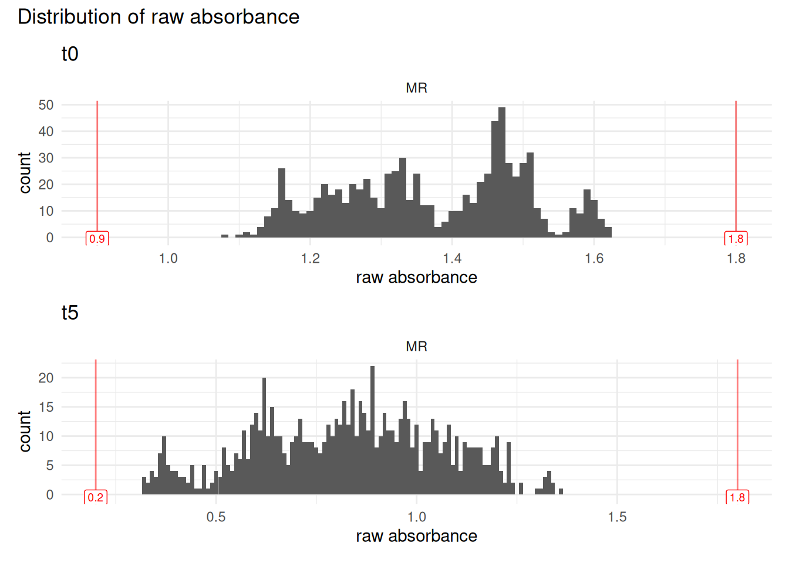
3.2 - Remove “empty” and NAs
With MicroResp experiments, edge effects are not rare, so we exclude any data from columns 1 and 12 of the 96-well plate. Those have been encoded in the mapping as “empty” (though they were not physically).
We also change data format so that all absorbance data becomes numeric (until now stored as character)
MR_clean <- MR |>
dplyr::filter_out(map == "empty" | is.na(abs_t0)) |>
dplyr::mutate(abs_t0 = as.numeric(abs_t0), abs_t5 = as.numeric(abs_t5))
# notice that there are now less rows (in particulare, it starts with column 1)
MR_clean
#> # A tibble: 800 × 28
#> row column well_id unique_well_id dataset plate_id abs_t0 abs_t5 map
#> <chr> <chr> <chr> <chr> <chr> <chr> <dbl> <dbl> <chr>
#> 1 A 2 A2 A2_P01 MR P01 1.15 0.39 Std_Glu
#> 2 A 2 A2 A2_P02 MR P02 1.23 0.43 Std_Glu
#> 3 A 2 A2 A2_P03 MR P03 1.26 0.47 Std_Glu
#> 4 A 2 A2 A2_P04 MR P04 1.25 0.44 Std_Glu
#> 5 A 2 A2 A2_P05 MR P05 1.25 0.47 Std_Glu
#> 6 A 2 A2 A2_P11 MR P11 1.41 0.62 Std_Glu
#> 7 A 2 A2 A2_P12 MR P12 1.4 0.56 Std_Glu
#> 8 A 2 A2 A2_P13 MR P13 1.37 0.57 Std_Glu
#> 9 A 2 A2 A2_P14 MR P14 1.4 0.59 Std_Glu
#> 10 A 2 A2 A2_P15 MR P15 1.51 0.64 Std_Glu
#> # ℹ 790 more rows
#> # ℹ 19 more variables: plate_nb <chr>, run_id <chr>, sample_id <chr>,
#> # lab_id <chr>, detection_plate_id <chr>, expe <chr>, cra_trial <chr>,
#> # sd_c <chr>, soil <chr>, crop_diversity <chr>, bloc <chr>,
#> # sampling_time <chr>, zone <chr>, date <chr>, sample_name <chr>,
#> # soil_dm_content_percent <dbl>, soil_well_g <dbl>,
#> # std_soil_dm_content_percent <dbl>, std_soil_well_g <dbl>3.3 - Normalisation
In preliminary works we noticed that detection_plate_id was the biggest driver of variability in our dataset. This is due to some lab issues and should not be a recurring problem, but it is a good illustration of the question of “at which scale should we normalize?”. Let’s visualize t0 absorbance readings for standard soils and glucose, supposedly the same between plates (see plot)
unnormed_plot <- MR_clean |>
dplyr::filter(map == "Std_Glu") |>
ggplot2::ggplot(ggplot2::aes(x = detection_plate_id, y = as.numeric(abs_t5))) +
ggplot2::theme_minimal() +
ggplot2::geom_boxplot() +
ggplot2::facet_wrap(~dataset, scales = "free_x") +
ggplot2::labs(title = "Raw data at t5",
subtitle = "no normalisation") +
ggplot2::ylim(0.38,0.58)
unnormed_plot
#> Warning: Removed 37 rows containing non-finite outside the scale range
#> (`stat_boxplot()`).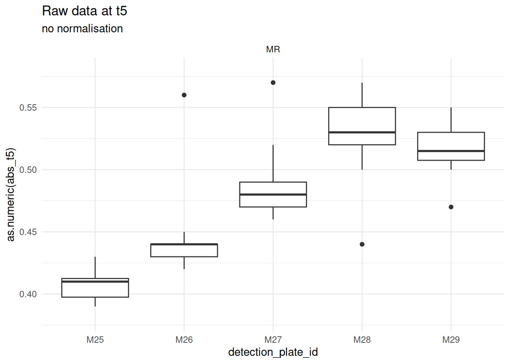
So, instead of a “per-plate” normalization, we propose a “per-dataset” normalisation. I.e., instead of
We get
MR_norm <- MR_clean |>
# compute dataset-wise mean of t0
dplyr::mutate(mean_t0_dataset = mean(abs_t0)) |>
# compute plate-wise mean of t0
dplyr::mutate(mean_t0_plate = mean(abs_t0), .by = plate_id) |>
# compute both norms: plate-wise and dataset-wise
dplyr::mutate(
norm_plate = mean_t0_plate * abs_t5 / abs_t0,
norm_dataset = mean_t0_dataset * abs_t5 / abs_t0
) |>
# reorder columns to improve readibility
dplyr::relocate(unique_well_id, abs_t0, abs_t5, norm_dataset, norm_plate, mean_t0_plate, mean_t0_dataset)
# Check it out
MR_norm
#> # A tibble: 800 × 32
#> unique_well_id abs_t0 abs_t5 norm_dataset norm_plate mean_t0_plate
#> <chr> <dbl> <dbl> <dbl> <dbl> <dbl>
#> 1 A2_P01 1.15 0.39 0.465 0.393 1.16
#> 2 A2_P02 1.23 0.43 0.480 0.426 1.22
#> 3 A2_P03 1.26 0.47 0.512 0.474 1.27
#> 4 A2_P04 1.25 0.44 0.483 0.462 1.31
#> 5 A2_P05 1.25 0.47 0.516 0.502 1.34
#> 6 A2_P11 1.41 0.62 0.603 0.655 1.49
#> 7 A2_P12 1.4 0.56 0.549 0.590 1.47
#> 8 A2_P13 1.37 0.57 0.571 0.605 1.45
#> 9 A2_P14 1.4 0.59 0.578 0.604 1.43
#> 10 A2_P15 1.51 0.64 0.582 0.668 1.58
#> # ℹ 790 more rows
#> # ℹ 26 more variables: mean_t0_dataset <dbl>, row <chr>, column <chr>,
#> # well_id <chr>, dataset <chr>, plate_id <chr>, map <chr>, plate_nb <chr>,
#> # run_id <chr>, sample_id <chr>, lab_id <chr>, detection_plate_id <chr>,
#> # expe <chr>, cra_trial <chr>, sd_c <chr>, soil <chr>, crop_diversity <chr>,
#> # bloc <chr>, sampling_time <chr>, zone <chr>, date <chr>, sample_name <chr>,
#> # soil_dm_content_percent <dbl>, soil_well_g <dbl>, …Choice of normalisation - graphical
Redo the same plots to confirm the improvement coming from the normalisation, and look at plots with original vs new normalisation
dataset_normed_plot <- MR_norm |>
dplyr::filter(map == "Std_Glu") |>
ggplot2::ggplot(ggplot2::aes(x = detection_plate_id, y = as.numeric(norm_dataset))) +
ggplot2::theme_minimal() +
ggplot2::geom_boxplot() +
ggplot2::facet_wrap(~dataset, scales = "free_x") +
ggplot2::labs(title = "Normalised data", subtitle = "dataset-level") +
ggplot2::ylim(0.38,0.58)
plate_normed_plot <- MR_norm |>
dplyr::filter(map == "Std_Glu") |>
ggplot2::ggplot(ggplot2::aes(x = detection_plate_id, y = as.numeric(norm_plate))) +
ggplot2::theme_minimal() +
ggplot2::geom_boxplot() +
ggplot2::facet_wrap(~dataset, scales = "free_x") +
ggplot2::labs(title = "Normalised data", subtitle = "plate-level") +
ggplot2::ylim(0.38,0.58)
unnormed_plot + plate_normed_plot + dataset_normed_plot
#> Warning: Removed 37 rows containing non-finite outside the scale range
#> (`stat_boxplot()`).
#> Warning: Removed 40 rows containing non-finite outside the scale range
#> (`stat_boxplot()`).
#> Warning: Removed 26 rows containing non-finite outside the scale range
#> (`stat_boxplot()`).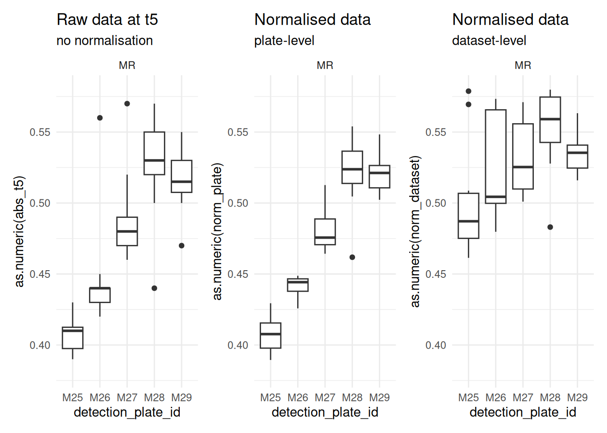
Each step, from raw to plate-level to dataset-level is an improvement on the data. This confirms the proposition, and we keep the dataset-level normalised data for downstream steps
3.4 - Convert to %CO2
Those are the coefficients as given in the MicroResp manual. However, if you are interested in this particular experiment, note that the manual recommends that you calibrate the equation on your own lab material.
%Co2 = -0.2265 + (-1.606)/(1+(-6.771)*norm)
MR_percent_co2 <- MR_norm |>
dplyr::mutate(
percent_co2 = -0.2265 + ((-1.606) / (1 + ((-6.771) * norm_dataset))),
.after = norm_dataset)
# Check it out
MR_percent_co2
#> # A tibble: 800 × 33
#> unique_well_id abs_t0 abs_t5 norm_dataset percent_co2 norm_plate
#> <chr> <dbl> <dbl> <dbl> <dbl> <dbl>
#> 1 A2_P01 1.15 0.39 0.465 0.520 0.393
#> 2 A2_P02 1.23 0.43 0.480 0.488 0.426
#> 3 A2_P03 1.26 0.47 0.512 0.425 0.474
#> 4 A2_P04 1.25 0.44 0.483 0.481 0.462
#> 5 A2_P05 1.25 0.47 0.516 0.418 0.502
#> 6 A2_P11 1.41 0.62 0.603 0.294 0.655
#> 7 A2_P12 1.4 0.56 0.549 0.365 0.590
#> 8 A2_P13 1.37 0.57 0.571 0.334 0.605
#> 9 A2_P14 1.4 0.59 0.578 0.324 0.604
#> 10 A2_P15 1.51 0.64 0.582 0.320 0.668
#> # ℹ 790 more rows
#> # ℹ 27 more variables: mean_t0_plate <dbl>, mean_t0_dataset <dbl>, row <chr>,
#> # column <chr>, well_id <chr>, dataset <chr>, plate_id <chr>, map <chr>,
#> # plate_nb <chr>, run_id <chr>, sample_id <chr>, lab_id <chr>,
#> # detection_plate_id <chr>, expe <chr>, cra_trial <chr>, sd_c <chr>,
#> # soil <chr>, crop_diversity <chr>, bloc <chr>, sampling_time <chr>,
#> # zone <chr>, date <chr>, sample_name <chr>, soil_dm_content_percent <dbl>, …3.5 - Convert to µg CO2-C / g dry soil / h
co2_emitted = (((percent_co2/100)x850x(44/22.4)x(12/44)x(273/(273+25)))/(soil_per_well_gx(soil_dw/100)))/5
MR_co2_g_h <- MR_percent_co2 |>
dplyr::mutate(
co2_g_h = (
((percent_co2 / 100) * 850 * (44/22.4) * (12/44) * (273 / (273+25))) /
dplyr::case_when(
# for std soils
column %in% c(2,3) ~
(std_soil_well_g * (std_soil_dm_content_percent / 100)),
column %in% c(4:11) ~
(soil_well_g * (soil_dm_content_percent / 100)))
) / 5
)
MR_co2_g_h
#> # A tibble: 800 × 34
#> unique_well_id abs_t0 abs_t5 norm_dataset percent_co2 norm_plate
#> <chr> <dbl> <dbl> <dbl> <dbl> <dbl>
#> 1 A2_P01 1.15 0.39 0.465 0.520 0.393
#> 2 A2_P02 1.23 0.43 0.480 0.488 0.426
#> 3 A2_P03 1.26 0.47 0.512 0.425 0.474
#> 4 A2_P04 1.25 0.44 0.483 0.481 0.462
#> 5 A2_P05 1.25 0.47 0.516 0.418 0.502
#> 6 A2_P11 1.41 0.62 0.603 0.294 0.655
#> 7 A2_P12 1.4 0.56 0.549 0.365 0.590
#> 8 A2_P13 1.37 0.57 0.571 0.334 0.605
#> 9 A2_P14 1.4 0.59 0.578 0.324 0.604
#> 10 A2_P15 1.51 0.64 0.582 0.320 0.668
#> # ℹ 790 more rows
#> # ℹ 28 more variables: mean_t0_plate <dbl>, mean_t0_dataset <dbl>, row <chr>,
#> # column <chr>, well_id <chr>, dataset <chr>, plate_id <chr>, map <chr>,
#> # plate_nb <chr>, run_id <chr>, sample_id <chr>, lab_id <chr>,
#> # detection_plate_id <chr>, expe <chr>, cra_trial <chr>, sd_c <chr>,
#> # soil <chr>, crop_diversity <chr>, bloc <chr>, sampling_time <chr>,
#> # zone <chr>, date <chr>, sample_name <chr>, soil_dm_content_percent <dbl>, …Check-out value distribution
MR_co2_g_h |>
ggplot2::ggplot(ggplot2::aes(x = co2_g_h)) +
ggplot2::theme_minimal() +
ggridges::geom_density_ridges(ggplot2::aes(y = map)) +
ggplot2::facet_wrap(~dataset)
#> Picking joint bandwidth of 0.0651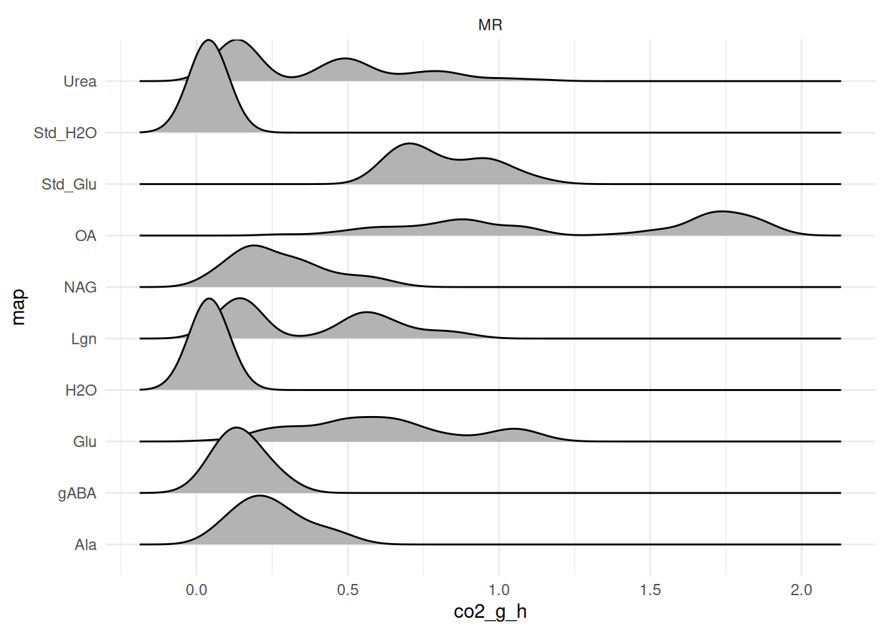
4 - Average per plate & substrate / outlier removal
4.1 - Compute preliminary average (pre-outlier removal)
MicroResp plates commonly show edge effects — sometimes marginal when the kit was well sealed, but often visible even to the naked eye along one or more edges of the plate. This is the same underlying issue already addressed for columns 1 and 12 in Remove “empty” and NAs, and it applies to rows as well: a preliminary run of the steps below showed that wells in row A and row H are outliers on many plates, often a majority of them. Following both this expectation and the recommendation of our colleagues at FiBL, we therefore exclude rows A and H from the subset below before computing the average, rather than treating them case-by-case as ordinary outliers. If you’d like to check the unfiltered data, simply comment out the filtering line. We then compute coefficient of variation which will serve as a threshold to identify potential outliers
MR_avg_prelim <- MR_co2_g_h |>
dplyr::filter_out(row %in% c("A", "H")) |>
dplyr::group_by(dataset, plate_id, map) |>
dplyr::summarize(
substrate_avg = mean(co2_g_h),
std_dev = stats::sd(co2_g_h)
) |>
dplyr::mutate(coef_var_percent = 100 * std_dev / substrate_avg) |>
dplyr::arrange(desc(coef_var_percent))Check out the distribution of the coefficient of variation
MR_avg_prelim |> ggplot2::ggplot(ggplot2::aes(x = coef_var_percent)) +
ggplot2::theme_minimal() +
ggplot2::geom_histogram() 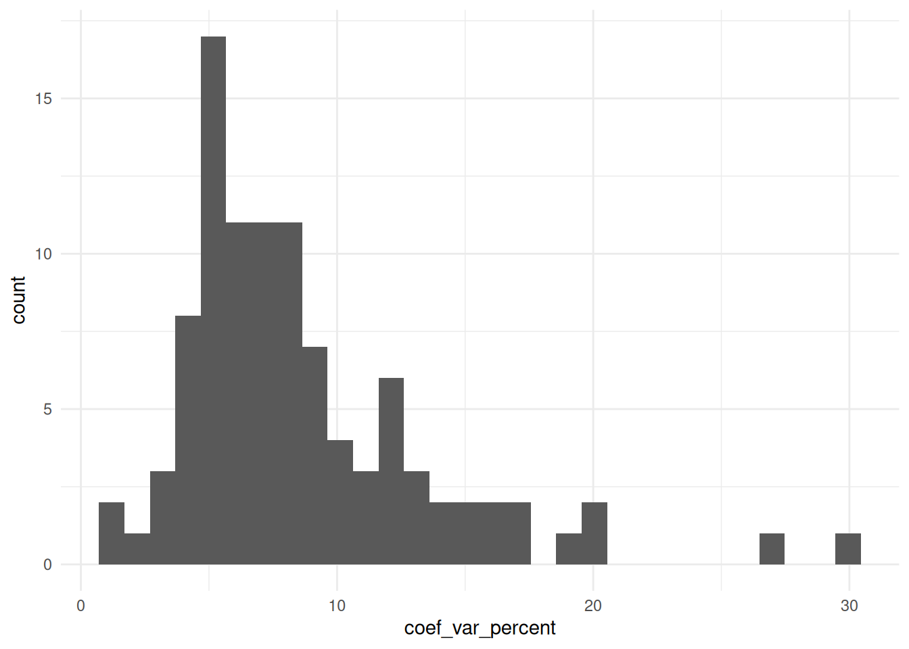
We have higher values than with the N-dosage pipeline, which is expected with this experiment: there are many sources of noise.
With a large data set, we set a threshold of 10-15%, i.e., data where the coefficient of variation is under the threshold will not be checked. Here we have a small data set and for the sake of showing the principle of outlier removal, we will set a somewhat stricter threshold at 8%
suspicious_substrates <- MR_avg_prelim |>
dplyr::filter(abs(coef_var_percent) > 8) |>
dplyr::select(dataset, plate_id, map) |> unique()
suspicious_MR <- MR_co2_g_h |>
dplyr::filter_out(row %in% c("A", "H")) |>
dplyr::right_join(suspicious_substrates, by = dplyr::join_by(dataset, plate_id, map)) Now, with a threshold of 8% as max coef of variation, we are left with only 6 combinations of plate x substrate to look at (instead of 50).
This kind of automated flagging is a trade-off: it saves you from manually reviewing every single well, but it also means you’re trusting the threshold to actually catch what matters. When in doubt, err on the side of a stricter threshold — one that flags more plates than strictly necessary — rather than a looser one. Reviewing a few extra, ultimately fine plates costs little; missing a real outlier because the threshold was too permissive costs much more.
4.2 - create QC plots
Create one list of QC plots per dataset.
Notice that we get a list with 1 plot per substrate (but not all because not all had outliers in this reduced dataset)
qc_plots <- plot_list_qc_microresp(
suspicious_MR,
map_col = "map",
panel_col = "run_id")
names(qc_plots)
#> [1] "Std_Glu" "Std_H2O" "H2O" "OA" "Glu" "Lgn" "NAG"
#> [8] "gABA" "Ala" "Urea"For the sake of illustration, we just plot 2 of the plots (one per dataset per substrate): each facets by run, and only displays data that is suspicious (coefficient of variation above the threshold defined above).
Notice that the number of plates differs between the two plots — only the plates flagged as suspicious for that particular substrate are shown.
# qc_plots$Std_Glu
qc_plots$Std_H2O
#> Picking joint bandwidth of 0.00232
#> Picking joint bandwidth of 0.00258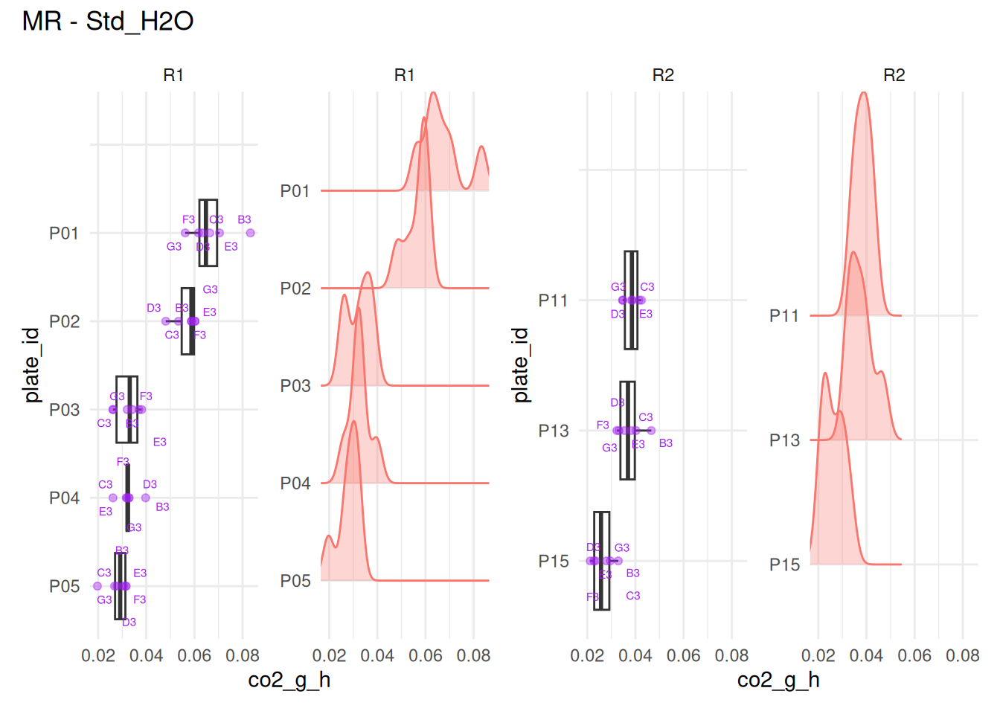
# qc_plots$H2O
# qc_plots$OA
# qc_plots$Glu
# qc_plots$Lgn
qc_plots$NAG
#> Picking joint bandwidth of 0.00678
#> Picking joint bandwidth of 0.0159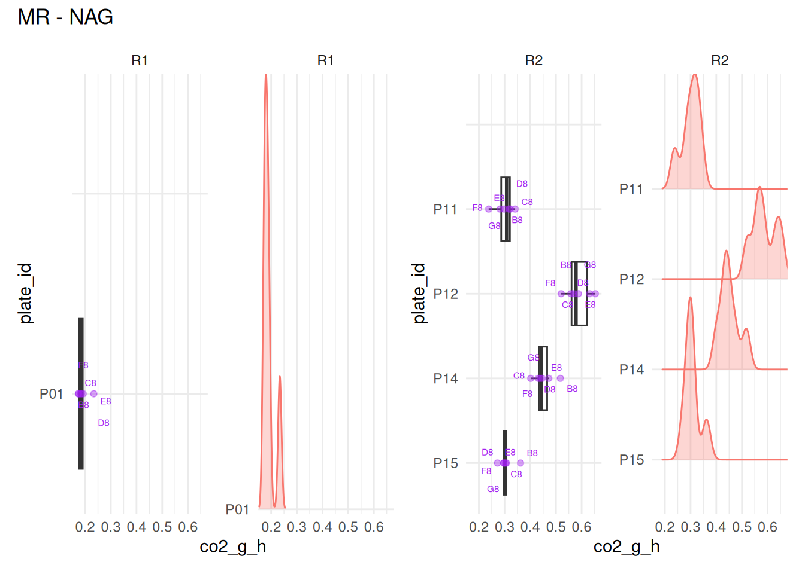
# qc_plots$gABA- For Std_H2O: we would remove B3 from P01
- For NAG: E8 from P01
For other substrates (not displayed here) - H2O: B4 from P02 and P12, F4 from P13 - OA: B5 from P12 - gABA: F9 from P01 - Urea: F11 from P12 - Std_Glu, Glu, Lgn, Ala: no wells to remove
To get a general overview, we can plot several substrates together in a single figure. Each substrate’s plot is itself already a patchwork composition (boxplot + ridgeline) with its own title — nesting one patchwork inside another normally drops that inner title, so we wrap each one with patchwork::wrap_elements() first, which “flattens” it into a single element that keeps its title intact when combined further. In a real dataset, depending on how many plates are flagged per substrate and per run, this combined view can get crowded quickly — treat it as a quick overview, and fall back to inspecting substrates individually, either interactively (as above) or by saving each plot to disk (see 2 chunks below) when there’s a lot to look through.
(patchwork::wrap_elements(full = qc_plots$Std_Glu) +
patchwork::wrap_elements(full = qc_plots$Std_H2O)) /
(patchwork::wrap_elements(full = qc_plots$H2O) +
patchwork::wrap_elements(full = qc_plots$OA))
#> Picking joint bandwidth of 0.0428
#> Picking joint bandwidth of 0.00232
#> Picking joint bandwidth of 0.00258
#> Picking joint bandwidth of 0.00243
#> Picking joint bandwidth of 0.00215
#> Picking joint bandwidth of 0.0925
#> Picking joint bandwidth of 0.0627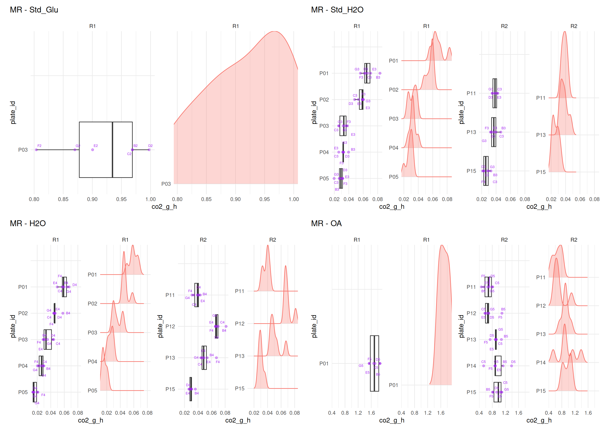
(patchwork::wrap_elements(full = qc_plots$Glu) +
patchwork::wrap_elements(full = qc_plots$Lgn)) /
(patchwork::wrap_elements(full = qc_plots$NAG) +
patchwork::wrap_elements(full = qc_plots$gABA))
#> Picking joint bandwidth of 0.0235
#> Picking joint bandwidth of 0.0073
#> Picking joint bandwidth of 0.00678
#> Picking joint bandwidth of 0.0159
#> Picking joint bandwidth of 0.00376
#> Picking joint bandwidth of 0.0125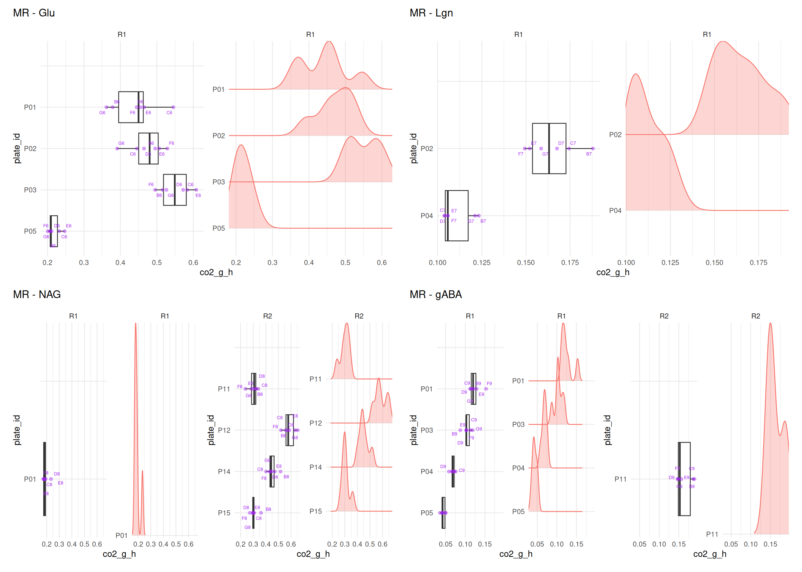
patchwork::wrap_elements(full = qc_plots$Ala) /
patchwork::wrap_elements(full = qc_plots$Urea)
#> Picking joint bandwidth of 0.00752
#> Picking joint bandwidth of 0.00329
#> Picking joint bandwidth of 0.0293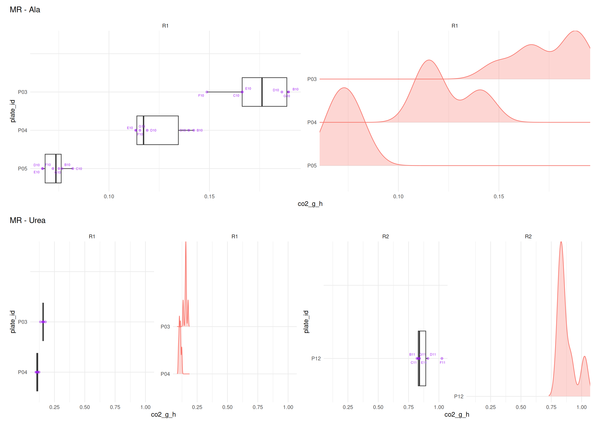
Save QC plots for review outside R (optional), in a loop. Notice that because plots are named in the list, they can be easily accessed by name (= substrate), and this can then serve as filenaming for export
4.3 - identifying outliers + removal
Then, by visual assessment of the plots one by one, we create a table of wells to remove, and clean the dataset from obvious outliers
Starting with greenhouse outliers
to_remove <- tibble::tribble(
~ plate_id, ~well_id,
# Urea
"P12", "F11",
# gABA
"P01", "F9",
# NAG
"P01", "E8",
# OA
"P12", "B5",
# H2O
"P02", "B4", "P12", "B4", "P13", "F4",
# Std-H2O
"P01", "B3",
) |>
dplyr::mutate(dataset = "MR")
to_remove
#> # A tibble: 8 × 3
#> plate_id well_id dataset
#> <chr> <chr> <chr>
#> 1 P12 F11 MR
#> 2 P01 F9 MR
#> 3 P01 E8 MR
#> 4 P12 B5 MR
#> 5 P02 B4 MR
#> 6 P12 B4 MR
#> 7 P13 F4 MR
#> 8 P01 B3 MRIn a real dataset with hundreds of plates, this can take a while, and we recommend a second reading of those plots after “sleeping on it”, and seeing if we still agree with ourselves, and didn’t make any mistake
Remove those outliers
MR_wash1 <- MR_co2_g_h |>
remove_wells(to_remove) It is possible to run once more through the quality check before deciding to move on, and possibly create a “wash2”, “wash3”, etc. version, though we never needed it so far. But it might become relevant, for example, in the case of one single really extreme value, that would “squeeze” the rest of the data for all plates of the same panel in a plot too tight to discern patterns. In such cases, a removal of the extreme outlier first, followed by re-plotting, allows the unfolding of squeezed plots
Store last version in a new variable (easier for edits…)
MR_outliers_removed <- MR_wash14.4 - Compute sample*substrate average
Now that outliers are removed, we can compute the average value per plate per substrate.
Note that we create a new column where we store, for each substrate, whether the well contained “sample soil” or “standard soil” (this will be needed for downstream analysis)
Plot distribution of values
distrib_uncorrected <- MR_avg |>
ggplot2::ggplot(ggplot2::aes(x = co2_g_h_avg)) +
ggplot2::theme_minimal() +
ggplot2::geom_histogram() +
ggplot2::labs(
title = "Distribution of per plate per substrate average\nof CO2 emission rate",
x = "CO2 emission rate [gCO2 / g dry soil / hour]") +
ggplot2::facet_wrap(~dataset)
distrib_uncorrected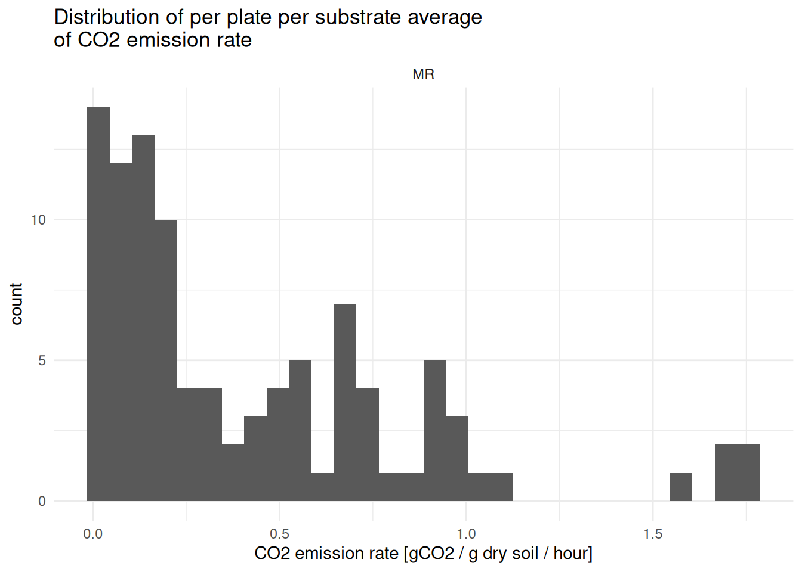
5 - Correction of averages - remove basal respiration
(Bongiorno et al. 2020) write: Thereafter, we corrected for the average respiration rate of soil to which the deionized water was added.
Although not fully explicit in the paper, we read this as meaning that the substrate-induced respiration computed so far is the sum of basal respiration plus the “real,” substrate-specific part — so correcting for it means subtracting the basal (H2O) respiration from each substrate’s value.
So, now we correct SIR’s for basal respiration (subtract H2O-resp from substrate-induced resp)
First, extract basal respiration and keep only H2O rows, so that we have, separately, the basal respiration of the samples vs the standard soil
# Extract basal resp data only
basal_resp <- MR_avg |>
dplyr::filter(map %in% c("H2O", "Std_H2O")) |>
dplyr::select(dataset, plate_id, std_sample, basal_resp = co2_g_h_avg)
# Check it out
basal_resp
#> # A tibble: 20 × 4
#> # Groups: dataset, plate_id [10]
#> dataset plate_id std_sample basal_resp
#> <chr> <chr> <chr> <dbl>
#> 1 MR P01 sample 0.0571
#> 2 MR P01 std_soil 0.0637
#> 3 MR P02 sample 0.0432
#> 4 MR P02 std_soil 0.0548
#> 5 MR P03 sample 0.0343
#> 6 MR P03 std_soil 0.0314
#> 7 MR P04 sample 0.0255
#> 8 MR P04 std_soil 0.0341
#> 9 MR P05 sample 0.0153
#> 10 MR P05 std_soil 0.0273
#> 11 MR P11 sample 0.0394
#> 12 MR P11 std_soil 0.0374
#> 13 MR P12 sample 0.0700
#> 14 MR P12 std_soil 0.0470
#> 15 MR P13 sample 0.0479
#> 16 MR P13 std_soil 0.0382
#> 17 MR P14 sample 0.0524
#> 18 MR P14 std_soil 0.0399
#> 19 MR P15 sample 0.0300
#> 20 MR P15 std_soil 0.0271Now we can join this info to the rest of the data and compute H2O-corrected data
Check it out
H2O_corrected
#> # A tibble: 100 × 7
#> # Groups: dataset, plate_id [10]
#> dataset plate_id map co2_g_h_avg std_sample basal_resp H2O_corrected_resp
#> <chr> <chr> <chr> <dbl> <chr> <dbl> <dbl>
#> 1 MR P01 Ala 0.206 sample 0.0571 0.149
#> 2 MR P01 Glu 0.440 sample 0.0571 0.383
#> 3 MR P01 H2O 0.0571 sample 0.0571 0.0571
#> 4 MR P01 Lgn 0.172 sample 0.0571 0.115
#> 5 MR P01 NAG 0.184 sample 0.0571 0.127
#> 6 MR P01 OA 1.72 sample 0.0571 1.66
#> 7 MR P01 Std_Glu 1.06 std_soil 0.0637 0.992
#> 8 MR P01 Std_H2O 0.0637 std_soil 0.0637 0.0637
#> 9 MR P01 Urea 0.150 sample 0.0571 0.0929
#> 10 MR P01 gABA 0.120 sample 0.0571 0.0625
#> # ℹ 90 more rowsIn the following sections, we follow computations as in (Bongiorno et al. 2020), i.e.:
Compute MSIR, MBC, metabolic quotient
Compute relative contributions of SIR’s (SIR / MSIR), refered to as rSIR’s
Derive from this relative contribution an intermediary value needed for Shanon (x*ln(x)), refered to as sSIR’s
Compute the Shannon index
Then, we can still discuss some N-based index
6 - QC - check standard soils
For this QC check, we use H2O-corrected data for the glucose standard.
# Extract standard-soil data
std_soil_data <- H2O_corrected |>
dplyr::filter(map %in% c("Std_H2O", "Std_Glu")) |>
dplyr::rename(substrate = map, SIR = H2O_corrected_resp) |>
dplyr::select(dataset, plate_id, substrate, SIR) |>
# joining MR_outliers_removed based on dataset and plate_id
# add columns as needed for your study (here: run_id and detection_plate_id)
dplyr::left_join(
MR_outliers_removed |>
dplyr::select(dataset, plate_id, run_id, detection_plate_id) |>
unique(),
by = dplyr::join_by(dataset, plate_id))
# plot it
std_soil_data |>
ggplot2::ggplot(ggplot2::aes(x = run_id, y = SIR)) +
ggplot2::theme_minimal() +
ggplot2::geom_boxplot() +
ggplot2::facet_wrap(~substrate, scales = "free")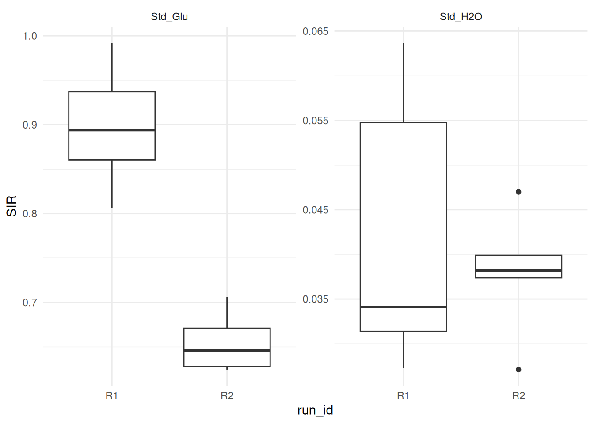
7 - Compute indices & final wrangling
7.1 - MBC, basal respiration, metabolic quotient and MSIR
Now, we compute the MBC, qCO2 and MSIR. We use H2O-corrected data throughout, and exclude both the water (basal respiration) and the standard-soil rows from the MSIR sum, since it should only reflect the real substrates.
# Extract Glu's own respiration value per plate (needed for MBC below)
glu_resp <- H2O_corrected |>
dplyr::filter(map == "Glu") |>
dplyr::select(dataset, plate_id, glu_resp = H2O_corrected_resp)
# Keep only real substrates (exclude basal/H2O and both std soils),
# drop the now-redundant raw co2_g_h_avg, and compute MSIR as a
# grouped sum - no pivot needed
substrate_data <- H2O_corrected |>
dplyr::filter_out(map %in% c("H2O", "Std_H2O", "Std_Glu")) |>
dplyr::rename(substrate = map, SIR = H2O_corrected_resp) |>
dplyr::select(!co2_g_h_avg) |>
dplyr::group_by(dataset, plate_id) |>
dplyr::mutate(MSIR = sum(SIR)) |>
dplyr::ungroup()7.2 - Shannon index
We can now join in each plate’s Glu respiration (needed for MBC) and directly compute relative SIRs (rSIR) and the -x*ln(x) intermediary value (sSIR), all while staying in the same long, per-substrate format.
# Join in basal_resp and glu_resp, then compute MBC, qCO2, rSIR, sSIR -
# all still in long format
rSIRs <- substrate_data |>
dplyr::left_join(
glu_resp, by = dplyr::join_by(dataset, plate_id)) |>
dplyr::mutate(
MBC = (glu_resp * 40.04) + 0.37, # not sure where those numbers come from!
qCO2 = basal_resp * 1000 / MBC, # same here
rSIR = SIR / MSIR,
sSIR = -rSIR * log(rSIR)
)Still, check out the output
rSIRs
#> # A tibble: 70 × 12
#> dataset plate_id substrate std_sample basal_resp SIR MSIR glu_resp MBC
#> <chr> <chr> <chr> <chr> <dbl> <dbl> <dbl> <dbl> <dbl>
#> 1 MR P01 Ala sample 0.0571 0.149 2.59 0.383 15.7
#> 2 MR P01 Glu sample 0.0571 0.383 2.59 0.383 15.7
#> 3 MR P01 Lgn sample 0.0571 0.115 2.59 0.383 15.7
#> 4 MR P01 NAG sample 0.0571 0.127 2.59 0.383 15.7
#> 5 MR P01 OA sample 0.0571 1.66 2.59 0.383 15.7
#> 6 MR P01 Urea sample 0.0571 0.0929 2.59 0.383 15.7
#> 7 MR P01 gABA sample 0.0571 0.0625 2.59 0.383 15.7
#> 8 MR P02 Ala sample 0.0432 0.143 2.71 0.432 17.7
#> 9 MR P02 Glu sample 0.0432 0.432 2.71 0.432 17.7
#> 10 MR P02 Lgn sample 0.0432 0.126 2.71 0.432 17.7
#> # ℹ 60 more rows
#> # ℹ 3 more variables: qCO2 <dbl>, rSIR <dbl>, sSIR <dbl>Now, we sum sSIRs within each plate to get the Shannon index.
shannon <- rSIRs |>
dplyr::group_by(dataset, plate_id) |>
dplyr::summarize(
shannon = sum(sSIR),
# basal_resp, MBC, qCO2, MSIR are already constant within each plate
# (computed once per plate, repeated across its substrate rows), so
# taking the first row's value is equivalent to taking "the" value
basal_resp = dplyr::first(basal_resp),
MBC = dplyr::first(MBC),
qCO2 = dplyr::first(qCO2),
MSIR = dplyr::first(MSIR),
.groups = "drop"
)
# Check it out
shannon
#> # A tibble: 10 × 7
#> dataset plate_id shannon basal_resp MBC qCO2 MSIR
#> <chr> <chr> <dbl> <dbl> <dbl> <dbl> <dbl>
#> 1 MR P01 1.23 0.0571 15.7 3.63 2.59
#> 2 MR P02 1.28 0.0432 17.7 2.44 2.71
#> 3 MR P03 1.29 0.0343 21.0 1.63 2.87
#> 4 MR P04 1.10 0.0255 13.1 1.95 2.46
#> 5 MR P05 0.885 0.0153 7.60 2.01 2.03
#> 6 MR P11 1.84 0.0394 22.9 1.72 2.73
#> 7 MR P12 1.86 0.0700 40.8 1.72 4.31
#> 8 MR P13 1.81 0.0479 28.5 1.68 3.26
#> 9 MR P14 1.83 0.0524 37.6 1.39 4.00
#> 10 MR P15 1.78 0.0300 25.3 1.18 3.08Gather all data (except std soil data)
MR_indices <- MR_outliers_removed |>
# update this selection to what makes sense in your study
dplyr::select(dataset, plate_id, run_id:sample_name) |>
unique() |>
dplyr::left_join(shannon, by = dplyr::join_by(dataset, plate_id)) |>
dplyr::relocate(plate_id, sample_id, soil, basal_resp, MBC, qCO2, MSIR, shannon)Check it out
MR_indices
#> # A tibble: 10 × 21
#> plate_id sample_id soil basal_resp MBC qCO2 MSIR shannon dataset run_id
#> <chr> <chr> <chr> <dbl> <dbl> <dbl> <dbl> <dbl> <chr> <chr>
#> 1 P01 t2_102_z1 Auto 0.0571 15.7 3.63 2.59 1.23 MR R1
#> 2 P02 t2_103_z3 Auto 0.0432 17.7 2.44 2.71 1.28 MR R1
#> 3 P03 t2_86_z2 ABC 0.0343 21.0 1.63 2.87 1.29 MR R1
#> 4 P04 t2_101_z3 Auto 0.0255 13.1 1.95 2.46 1.10 MR R1
#> 5 P05 t2_84_z1 ABC 0.0153 7.60 2.01 2.03 0.885 MR R1
#> 6 P11 t2_92_z2 Ref 0.0394 22.9 1.72 2.73 1.84 MR R2
#> 7 P12 t2_82_z2 ABC 0.0700 40.8 1.72 4.31 1.86 MR R2
#> 8 P13 t2_94_z3 Ref 0.0479 28.5 1.68 3.26 1.81 MR R2
#> 9 P14 t2_87_z2 ABC 0.0524 37.6 1.39 4.00 1.83 MR R2
#> 10 P15 t2_91_z3 Ref 0.0300 25.3 1.18 3.08 1.78 MR R2
#> # ℹ 11 more variables: lab_id <chr>, detection_plate_id <chr>, expe <chr>,
#> # cra_trial <chr>, sd_c <chr>, crop_diversity <chr>, bloc <chr>,
#> # sampling_time <chr>, zone <chr>, date <chr>, sample_name <chr>This is per-plate aggregated data, meaning that we lost the per-substrate data, including raw co2_g_h and its corrected version SIR, as well as relative SIR (rSIR) and precomputed sSIR, which are stored in rSIRs (just in case). Standard-soil data is set aside too — it’s rebuilt directly from H2O_corrected in QC - check standard soils.
rSIRs
#> # A tibble: 70 × 12
#> dataset plate_id substrate std_sample basal_resp SIR MSIR glu_resp MBC
#> <chr> <chr> <chr> <chr> <dbl> <dbl> <dbl> <dbl> <dbl>
#> 1 MR P01 Ala sample 0.0571 0.149 2.59 0.383 15.7
#> 2 MR P01 Glu sample 0.0571 0.383 2.59 0.383 15.7
#> 3 MR P01 Lgn sample 0.0571 0.115 2.59 0.383 15.7
#> 4 MR P01 NAG sample 0.0571 0.127 2.59 0.383 15.7
#> 5 MR P01 OA sample 0.0571 1.66 2.59 0.383 15.7
#> 6 MR P01 Urea sample 0.0571 0.0929 2.59 0.383 15.7
#> 7 MR P01 gABA sample 0.0571 0.0625 2.59 0.383 15.7
#> 8 MR P02 Ala sample 0.0432 0.143 2.71 0.432 17.7
#> 9 MR P02 Glu sample 0.0432 0.432 2.71 0.432 17.7
#> 10 MR P02 Lgn sample 0.0432 0.126 2.71 0.432 17.7
#> # ℹ 60 more rows
#> # ℹ 3 more variables: qCO2 <dbl>, rSIR <dbl>, sSIR <dbl>7.3 - Last data wrangling
For our Field experiment, some modalities are to be removed: Bloc 1 is not a real bloc, and the faba bean did not take in the Ref treatment, so we removed it from MR data. Not relevant to write it out here though (didn’t make it into plates 1 to 5), but nice to mention that some more post analysis might be relevant
Plot the indices
MR_indices |>
ggplot2::ggplot(ggplot2::aes(x = soil, y = basal_resp)) +
ggplot2::theme_minimal() +
ggplot2::geom_boxplot(ggplot2::aes(fill = run_id)) 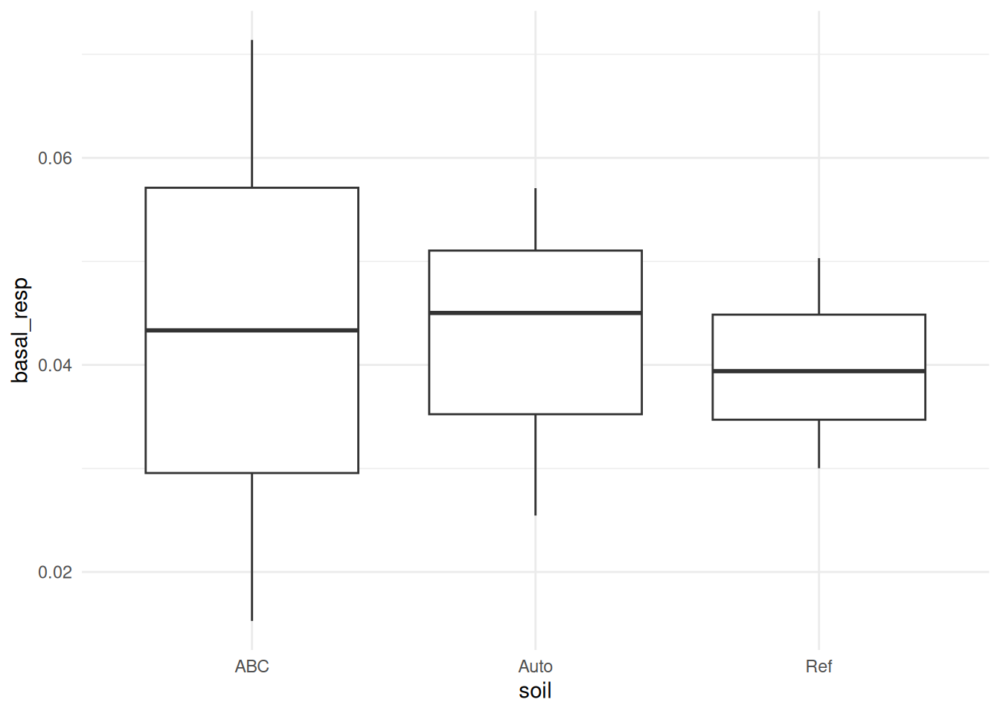
8 - Next steps
Can be exported with MR_indices |> write_rds("path/to/the/file.rds") or as a csv with MR_indices |> write_csv("path/to/the/file.csv")
Now would come: plotting, modelling, etc. –> “usual data analysis”